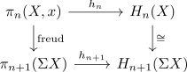

Hurewicz Homomorphism and suspension
Proposition
The hurewicz homomorphism is compatible with the suspension isomorphism and the freudenthal suspension map for homotopy groups, i.e.

where the right vertical morphism is the suspension isom
Proof
Recall that the suspension isomorphism is natural, hence
\begin{align*}
\sigma(f_*([S^n])) =& (\Sigma f)_*(\sigma[S^n]) \\
=& (\Sigma f)_* [S^{n+1}] \\
=& h_{n+1}(\Sigma f)
\end{align*}
here we have choosen the generator of H_n(S^n) compatible with the suspension isomorphism